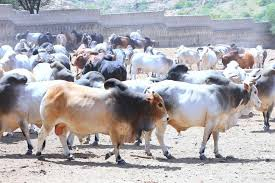

Our Core Business Activities
Biwosen Trading PLC is a dynamic and reputable company engaged in diverse business activities. Our core operations include:

Export Trade in Live Animals and Animal Products
We specialize in the export of high-quality live animals and a wide range of animal products to international markets. Our commitment to quality and ethical practices ensures that we meet the highest standards in the industry.

Cutting, Shaping, and Finishing of Stone Products (Marble and Limestone)
We offer premium services in the cutting, shaping, and finishing of marble and limestone products. Our skilled craftsmen and state-of-the-art technology enable us to deliver exquisite stone products that meet the unique requirements of our clients.

Wholesale Trade in Agricultural Products
We are also involved in the wholesale trade of agricultural products, sourcing and distributing a variety of high-quality produce to meet the demands of both domestic and international markets.

Cars Assembly
We provide services in the assembly of vehicles, ensuring that our clients receive high-quality and reliable transportation solutions.